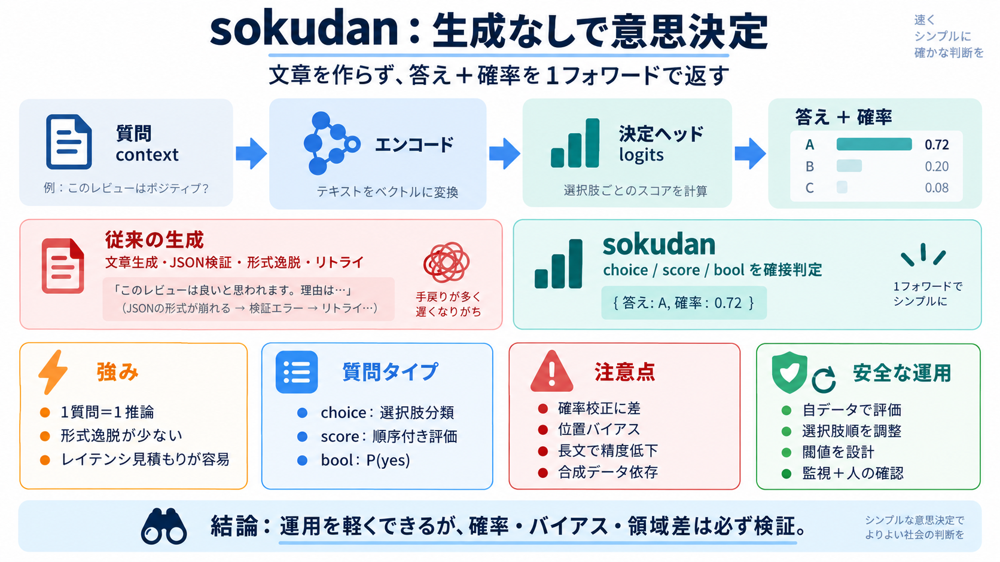

Apple Silicon LLM Benchmarks: 258 tok/s Figures, M1–M6 (2026)
| GLM-5.3 | 753B-A40B | Q4\_K\_M | M3 Ultra | 512 GB | MLX | estimated12 | nulls | 2026-09 | | Hermes 4 70B | 70B | Q4\_…

| GLM-5.3 | 753B-A40B | Q4\_K\_M | M3 Ultra | 512 GB | MLX | estimated12 | nulls | 2026-09 | | Hermes 4 70B | 70B | Q4\_…
``` CONDA_SUBDIR=osx-arm64 conda create -n mlx_benchmark python=3.10 numpy pytorch torchvision scipy requests -c conda-f…
MLX's macOS-only limitation is the driving force behind seeking alternatives. You cannot deploy MLX models to iOS, Andro…
1. MLX running on Apple Silicon consistently outperforms PyTorch with MPS backend in the majority of operations. 2. CUDA…
On March 30, 2026, Ollama announced it was switching to MLX as its inference engine on Apple Silicon (currently in previ…